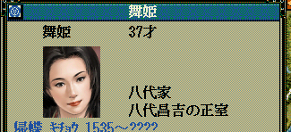

%(hilight)s
武将 - 武将戸籍
武将の武将戸籍とは、武将情報のうち、姓名や身分や状態や死去情報など、武将の存在自体に自体にかかわる最重要項目です。
また、新規武将の作成、及び、勢力を超えた武将の転居、といったものも扱います。
武将戸籍と一言で言っても３つの概念で構成されます。
p武将戸籍情報とp武将情報は、ix が同じなら同一人物の情報
このp武将戸籍情報とp武将情報 は事実上は１つのテーブルのように扱う、というのはとても重要な特性です。
上記、p武将戸籍情報において、「武将番号【配列用】23番」が「蘆名盛氏」ということですから、
p武将情報 の方でも「武将番号【配列用】23番」が葦名盛氏に関するパラメータということになります。
「顔番号」は「列伝番号」とほぼ同義
「武将情報列挙.h」に
といったように1300人分が定義されています。
これが顔番号でもあり、列伝番号でもある
これが天翔記に出てくる歴史上の人物1300人の顔番号でもあり、同時に列伝番号も兼ねています。
「武将の姓名」や「武将の532枠のスロット上の番号」は変化するのに対して、この「顔番号(兼 列伝番号)」は原則、変化しないため、
「この人物は一体誰なのか？」といった情報を確定させる上で、一番強い情報がこの「顔番号」だと言えます。
もしあなたが、フルカラー顔キット を導入している場合は、
「顔番号」に対応する「画像ファイル名」は、顔番号に1を足したものとなります。
織田信長の顔番号は0ですが、画像ファイル名としては0001.bmpとなる、ということです。
天翔記で編集できる32個の顔番号は？
顔番号 1300-1331 は天翔記にて、ユーザー用に用意されたオリジナルの顔を作れる32個の枠です。
列伝を持たないモンタージュ武将(モンタージュ姫)の顔番号は非常に大きな値となる
顔番号が10000を超えているようであれば、モンタージュ顔であると言えます。
武将の顔番号から、「武将番号【配列用】」を取得する
WORD Get_武将番号【配列用】(int 顔番号)
そのような武将が現状天翔記に登場していない( = p武将戸籍情報のリストにない)場合には、0xFFFF が返ってくる
これはほとんどのScenarioModにおいて、最重要に近い手法であり、
もっとも頻発する可能性が高いです。
void カスタム::On_プレイヤ担当ターン《メイン画面》() {
int iBushouID = Get_武将番号【配列用】(顔番号::織田信長);
if (0 <= iBushouID && iBushouID < 最大数::武将情報::配列数) {
デバッグ出力 << "織田信長は532のスロットに居ます" << endl;
デバッグ出力 << "現在の武将番号【配列用】は " << iBushouID << " です。" << endl;
}
else {
デバッグ出力 << "織田信長は532のスロットに居ません" << endl;
}
}
特定の武将番号【配列用】の顔番号と比較する
p武将戸籍情報[ix].顔番号
これもかなり高確率で出現する比較方法となります。
void カスタム::On_プレイヤ担当ターン《メイン画面》() {
for (int iBushouID = 0; iBushouID < 最大数::武将情報::配列数; iBushouID++) {
if (p武将戸籍情報[iBushouID].顔番号 == 顔番号::長尾景虎) {
デバッグ出力 << "上杉謙信の現在の武将番号【配列用】は、" << iBushouID << "です" << endl;
}
}
}
武将の姓名(フルネーム)から、「武将番号【配列用】」を取得する
WORD Get_武将番号【配列用】(string 武将姓名)
そのような武将が現状天翔記に登場していない( = p武将戸籍情報のリストにない)場合には、0xFFFF が返ってくる
顔番号から逆引きするのが原則ですが、顔番号が何らかの事情によりためらわれる、
例えば、モンタージュであり顔番号からの逆引きがためらわれる場合などに利用します。
又、「顔番号は変化するが、姓名は変化しない」といった特殊な武将や姫をご自身で制作した場合に、利用するのが良いでしょう。
void カスタム::On_プレイヤ担当ターン《メイン画面》() {
int iBushouID = Get_武将番号【配列用】("織田ジョウ"); // なんらかの事情で顔番号が不定だが、とりあえず「姓名」は固定である場合の逆引き
if (0 <= iBushouID && iBushouID < 最大数::武将情報::配列数) {
デバッグ出力 << Get_名字(iBushouID) + Get_名前(iBushouID) + "は532のスロットに居ます" << endl;
デバッグ出力 << "現在の武将番号【配列用】は " << iBushouID << " です。" << endl;
}
else {
デバッグ出力 << Get_名字(iBushouID) + Get_名前(iBushouID) + "は532のスロットに居ません" << endl;
}
}
特定の武将番号【配列用】の姓名(フルネーム)を取得する、比較する
string Get_名字(int 武将番号【配列用】)
string Get_名前(int 武将番号【配列用】)
武将は原則的に姓名が変化しますので、この方法を利用することはあまりありません。
絶対に名前が変化しない武将か、もしくは、その武将であったとしても「その姓名の時だけ」なにかを行わせたいといった場合に、
利用することになるでしょう。
void カスタム::On_プレイヤ担当ターン《メイン画面》() {
// 長尾景虎の時はヒットしない、上杉謙信という姓名で初めてヒットする
for (int iBushouID = 0; iBushouID < 最大数::武将情報::配列数; iBushouID++) {
if (Get_名字(iBushouID) + Get_名前(iBushouID) == "上杉謙信") {
デバッグ出力 << "上杉謙信の現在の武将番号【配列用】は、" << iBushouID << "です" << endl;
}
}
}
特定の武将番号【配列用】の姓名を変更する
void Set_名字(int 武将番号【配列用】, string 名字)
void Set_名前(int 武将番号【配列用】, string 名前)
単純に名前を変更する関数です。
void カスタム::On_プレイヤ担当ターン《メイン画面》() {
int iBushouID = Get_武将番号【配列用】(顔番号::織田信長);
if (0 <= iBushouID && iBushouID < 最大数::武将情報::配列数) {
Set_名字(iBushouID, "スズキ");
Set_名前(iBushouID, "イチロ");
}
}
名前を変更したくらいでは、歴史上の武将の実態は変化しない
武将は姓名が変更されたからといって、実態が変化するわけではありません。
例えば、織田信長の名前を鈴木一郎に変化させたとしても、桶狭間のイベントは全く問題なく発生します。
逆に言えば、例え織田信長という名前のままであったとしても、
顔番号(≒列伝番号)を変えてしまうとそれはもはや我々が知る織田信長ではないのです。
ランダムな武将の名字、武将の名前、姫の名前を取得する
string Get_ランダム名字()
string Get_ランダム名前()
string Get_ランダム姫名前()
ランダムな名前を取得する関数です。
void カスタム::On_プレイヤ担当ターン《メイン画面》() {
int iBushouID = Get_武将番号【配列用】(顔番号::織田信長);
// 武将名については、ランダムにそれっぽい名前が提供される。
if (0 <= iBushouID && iBushouID < 最大数::武将情報::配列数) {
string 名字 = Get_ランダム名字();
string 名前 = Get_ランダム名前();
Set_名字(iBushouID, 名字);
Set_名前(iBushouID, 名前);
}
// 姫に関してはゲーム内で姫名として使われるリストからランダムで選択される。
int iHimeBushouID = Get_武将番号【配列用】(顔番号::長井帰蝶);
if (0 <= iHimeBushouID && iHimeBushouID < 最大数::武将情報::配列数) {
string 名前 = Get_ランダム姫名前();
Set_名前(iHimeBushouID, 名前);
}
}

武将の状態の取得と比較
p武将戸籍情報[ix].状態
「状態::大名～状態::死亡」に対応する。
このp武将戸籍情報[ix].状態 に迂闊値を代入すると、辻褄が合わなくなり大破綻を起こすため注意。
状態を変更する場合には、Set_武将状態****(...) といったような専用の関数がいくつか用意されている。

void カスタム::On_プレイヤ担当ターン《メイン画面》() {
int iBushouID = Get_武将番号【配列用】(顔番号::明智光秀);
if (0 <= iBushouID && iBushouID < 最大数::武将情報::配列数) {
if (p武将戸籍情報[iBushouID].状態 == 状態::大名) {
デバッグ出力 << Get_名字(iBushouID) + Get_名前(iBushouID) << "は大名です" << endl;
}
else if (p武将戸籍情報[iBushouID].状態 == 状態::軍団長) {
デバッグ出力 << Get_名字(iBushouID) + Get_名前(iBushouID) << "は軍団長です" << endl;
}
else if (p武将戸籍情報[iBushouID].状態 == 状態::現役) {
デバッグ出力 << Get_名字(iBushouID) + Get_名前(iBushouID) << "は現役の通常武将で、どこかの大名家に仕えています" << endl;
}
else if (p武将戸籍情報[iBushouID].状態 == 状態::浪人) {
デバッグ出力 << Get_名字(iBushouID) + Get_名前(iBushouID) << "は浪人です" << endl;
}
else if (p武将戸籍情報[iBushouID].状態 == 状態::姫) {
デバッグ出力 << Get_名字(iBushouID) + Get_名前(iBushouID) << "は姫です" << endl;
}
else if (p武将戸籍情報[iBushouID].状態 == 状態::隠居) {
デバッグ出力 << Get_名字(iBushouID) + Get_名前(iBushouID) << "は隠居者です" << endl;
}
else if (p武将戸籍情報[iBushouID].状態 == 状態::待機) {
デバッグ出力 << Get_名字(iBushouID) + Get_名前(iBushouID) << "は532の枠には居ますが、登場していない人物です" << endl;
}
else if (p武将戸籍情報[iBushouID].状態 == 状態::死亡) {
デバッグ出力 << Get_名字(iBushouID) + Get_名前(iBushouID) << "は死亡しました" << endl;
}
}
int iHimeBushouID = Get_武将番号【配列用】(顔番号::長井帰蝶);
if (0 <= iHimeBushouID && iHimeBushouID < 最大数::武将情報::配列数) {
if (p武将戸籍情報[iHimeBushouID].状態 == 状態::大名) {
デバッグ出力 << Get_名字(iHimeBushouID) + Get_名前(iHimeBushouID) << "は大名です" << endl;
}
else if (p武将戸籍情報[iHimeBushouID].状態 == 状態::軍団長) {
デバッグ出力 << Get_名字(iHimeBushouID) + Get_名前(iHimeBushouID) << "は軍団長です" << endl;
}
else if (p武将戸籍情報[iHimeBushouID].状態 == 状態::現役) {
デバッグ出力 << Get_名字(iHimeBushouID) + Get_名前(iHimeBushouID) << "は現役の通常武将で、どこかの大名家に仕えています" << endl;
}
else if (p武将戸籍情報[iHimeBushouID].状態 == 状態::浪人) {
デバッグ出力 << Get_名字(iHimeBushouID) + Get_名前(iHimeBushouID) << "は浪人です" << endl;
}
else if (p武将戸籍情報[iHimeBushouID].状態 == 状態::姫) {
デバッグ出力 << Get_名字(iHimeBushouID) + Get_名前(iHimeBushouID) << "は姫です" << endl;
}
else if (p武将戸籍情報[iHimeBushouID].状態 == 状態::隠居) {
デバッグ出力 << Get_名字(iHimeBushouID) + Get_名前(iHimeBushouID) << "は隠居者です" << endl;
}
else if (p武将戸籍情報[iHimeBushouID].状態 == 状態::待機) {
デバッグ出力 << Get_名字(iHimeBushouID) + Get_名前(iHimeBushouID) << "は532の枠には居ますが、登場していない人物です" << endl;
}
else if (p武将戸籍情報[iHimeBushouID].状態 == 状態::死亡) {
デバッグ出力 << Get_名字(iHimeBushouID) + Get_名前(iHimeBushouID) << "は死亡しました" << endl;
}
}
}
武将の状態の変更
原則的に、状態の変更はかなり多岐にわたる関連パラメータを変更しなければならず、安全な行為とは言えません。
ScenarioModでは、そのうち、よく利用しそうな状態変化用の関数を提供しています。
現役 ⇒ 浪人
bool Set_武将状態《現役→浪人》(int 武将番号【配列用】)
void カスタム::On_シナリオデータ反映直後(int シナリオ番号) {
int iBushouID = Get_武将番号【配列用】(顔番号::柴田勝家);
if (0 <= iBushouID && iBushouID < 最大数::武将情報::配列数) {
// 柴田勝家が、「大名」や「軍団長」ではなく、一般の武将であれば、浪人にする。
if (p武将戸籍情報[iBushouID].状態 == 状態::現役) {
bool success = Set_武将状態《現役→浪人》(iBushouID);
if (success) {
デバッグ出力 << "柴田勝家は現役→浪人になりました。" << endl;
}
}
}
}
浪人 ⇒ 現役
bool Set_武将状態《浪人→現役》( int 武将番号【配列用】)
void カスタム::On_シナリオデータ反映直後(int シナリオ番号) {
int iBushouID = Get_武将番号【配列用】(顔番号::百地三太夫);
if (0 <= iBushouID && iBushouID < 最大数::武将情報::配列数) {
bool success = Set_武将状態《浪人→現役》(iBushouID);
if (success) {
デバッグ出力 << "百地三太夫は浪人→現役になりました。" << endl;
}
}
}
状態問わず ⇒ 死亡
武将 - 死亡 を参照
現役 ⇒ 軍団長
軍団の独立・新設・軍団間の城の移動 を参照
軍団長 ⇒ 大名
軍団の独立・新設・軍団間の城の移動 を参照
軍団長 や 大名 から一般へ (Set_城主を利用することで、一般武将と立場を入れ替える)
軍団の独立・新設・軍団間の城の移動 を参照
状況に応じて状態名を変更する
個々の武将、あるいはさらに細分化した状況で状態名の表示を変更することが出来ます。
On_状態名表示直前 を参照のこと。
武将の身分の取得と比較
p武将戸籍情報[ix].身分
「身分::隠居～身分::足軽頭」に対応する。
このp武将戸籍情報[ix].身分 に迂闊値を代入すると、辻褄が合わなくなり大破綻を起こすため注意。
元々、「身分::宿老～身分::足軽」の武将が、別の「身分::宿老～身分::足軽」へと変化させる分には問題はない。
一方、元々「身分::大名」な者を「身分::宿老」としたり、元々「身分::隠居」な者を「身分::足軽」などとすると情報が破綻するので注意。
void カスタム::On_プレイヤ担当ターン《メイン画面》() {
int iBushouID = Get_武将番号【配列用】(顔番号::明智光秀);
if (0 <= iBushouID && iBushouID < 最大数::武将情報::配列数) {
if (p武将戸籍情報[iBushouID].身分 == 身分::大名) {
デバッグ出力 << Get_名字(iBushouID) + Get_名前(iBushouID) << "は大名です" << endl;
}
else if (p武将戸籍情報[iBushouID].身分 == 身分::宿老) {
デバッグ出力 << Get_名字(iBushouID) + Get_名前(iBushouID) << "は宿老です" << endl;
}
else if (p武将戸籍情報[iBushouID].身分 == 身分::家老) {
デバッグ出力 << Get_名字(iBushouID) + Get_名前(iBushouID) << "は家老です" << endl;
}
else if (p武将戸籍情報[iBushouID].身分 == 身分::部将) {
デバッグ出力 << Get_名字(iBushouID) + Get_名前(iBushouID) << "は部将です" << endl;
}
else if (p武将戸籍情報[iBushouID].身分 == 身分::侍大将) {
デバッグ出力 << Get_名字(iBushouID) + Get_名前(iBushouID) << "は侍大将です" << endl;
}
else if (p武将戸籍情報[iBushouID].身分 == 身分::足軽頭) {
デバッグ出力 << Get_名字(iBushouID) + Get_名前(iBushouID) << "は足軽です" << endl;
}
else if (p武将戸籍情報[iBushouID].身分 == 身分::隠居) {
デバッグ出力 << Get_名字(iBushouID) + Get_名前(iBushouID) << "は隠居者です" << endl;
}
}
}
武将の身分の変更
原則的に、状態の変更はかなり多岐にわたる関連パラメータを変更しなければならず、安全な行為とは言えません。
今の身分が、「宿老～足軽」なら、その範囲内でのみ変更するのは安全
今現在の武将の身分が「宿老～足軽」の間であれば、その範囲内であれば身分を変更しても
「最大兵数」以外は影響しないため、
安全に身分を変更できます。
void カスタム::On_シナリオデータ反映直後(int シナリオ番号) {
int iBushouID = Get_武将番号【配列用】(顔番号::明智光秀);
if (0 <= iBushouID && iBushouID < 最大数::武将情報::配列数) {
// この身分の範疇なのであれば、その範疇の中で別の身分へと変更しても大丈夫
if (身分::宿老 <= p武将戸籍情報[iBushouID].身分 && p武将戸籍情報[iBushouID].身分 <= 身分::足軽頭) {
if (p武将戸籍情報[iBushouID].身分 != 身分::宿老) {
p武将戸籍情報[iBushouID].身分 = 身分::宿老;
}
// 新たな身分でもてる兵数を超えているならば、修正する
int 最大兵数 = Get_武将最大兵数(iBushouID);
if (p武将情報[iBushouID].兵数 > 最大兵数) {
p武将情報[iBushouID].兵数 = 最大兵数;
}
}
}
}
宿老～足軽 の身分から ⇒ 大名へ
軍団の独立・新設・軍団間の城の移動 を参照
大名の身分 から宿老～足軽へ (Set_城主を利用することで、一般武将と立場を入れ替える)
軍団の独立・新設・軍団間の城の移動 を参照
状況に応じて身分名を変更する
個々の武将、あるいはさらに細分化した状況で身分名の表示を変更することが出来ます。
On_身分名表示直前 を参照のこと。
性別の取得や設定
p武将戸籍情報[ix].性別
「性別::男」もしくは「性別::女」が比較、代入対象となる
void カスタム::On_プレイヤ担当ターン《メイン画面》() {
for (int iBushouID = 0; iBushouID < 最大数::武将情報::配列数; iBushouID++) {
if (p武将戸籍情報[iBushouID].性別 == 性別::男) {
デバッグ出力 << Get_名字(iBushouID) + Get_名前(iBushouID) << "は男です" << endl;
}
else if(p武将戸籍情報[iBushouID].性別 == 性別::女) {
デバッグ出力 << Get_名字(iBushouID) + Get_名前(iBushouID) << "は女です" << endl;
}
}
}
性転換してもたいして問題ではない
天飛翔においては、一般武将化してしまった後は、男でも女でたいした問題ではありません。
口調が変わる程度です。
子供も普通に誕生します。
void カスタム::On_シナリオデータ反映直後(int シナリオ番号) {
int iBushouID = Get_武将番号【配列用】(顔番号::長尾景虎);
for (int iBushouID = 0; iBushouID < 最大数::武将情報::配列数; iBushouID++) {
if (p武将戸籍情報[iBushouID].状態 == 状態::大名) {
p武将戸籍情報[iBushouID].性別 = 性別::女;
}
}
// 上杉謙信は、性転換した。
if (0 <= iBushouID && iBushouID < 最大数::武将情報::配列数) {
p武将戸籍情報[iBushouID].性別 = 性別::女;
}
}
戦死と退却
戦争 - 退却・戦死 を参照してください。
新規武将を自動作成し、浪人として誕生させる
int Set_武将誕生(int 顔番号 = -1)
顔番号(=列伝番号)を指定すれば、その顔番号(=列伝)となる。
又、列伝番号も兼ねるので、同じ顔＆列伝が複数人生存したりしないように要注意すること。
顔番号指定を省略した場合、「能力・職業・年齢」などの基づいて、「汎用顔の中からふさわしいものが選択」される。
一方、汎用顔の場合は、列伝とは紐付けられない。
void カスタム::On_相場変更直前() {
if (p年情報.季節 == 季節::夏) {
// 顔は自動で
int iBushouID = Set_武将誕生();
if (0 <= iBushouID && iBushouID < 最大数::武将情報::配列数) {
int iCastleID = p武将情報[iBushouID].所属居城【城番号】 - 1;
if ( 0 <= iCastleID && iCastleID < 最大数::城情報::配列数) {
噴出ダイアログ《通常・左上》開始(iBushouID, "今、浪人として誕生。");
噴出ダイアログ《通常・左上》更新(iBushouID, Get_城名(iCastleID) + Get_城称(iCastleID) + "付近に居ます");
噴出ダイアログ《通常・左上》終了();
}
}
else {
デバッグ出力 << "空きスロットが無いなど、何らかの理由により、武将の誕生に失敗しています" << endl;
}
}
}
顔番号を指定すれ場合
天翔記内で登場する武将の顔番号を指定してしまうと、２人の歴史上の人物が存在することになってしまい
イベントなどが武将Ａに対して発生したり、武将Ｂに対して発生したり、破綻するので注意。
原則的には、以下のいずれかの番号が安全である
- ユーザー番号1300-1331を指定する
- 死去後の武将の顔番号を指定する
- 120年以上後に誕生するような武将の顔番号を指定する(ようするに２人同時にゲーム内に登場することがないようにする)
void カスタム::On_プレイヤ担当ターン《メイン画面》() {
if (p年情報.季節 == 季節::夏) {
// 顔は自動で
int iBushouID = Set_武将誕生(1309);
if (0 <= iBushouID && iBushouID < 最大数::武将情報::配列数) {
int iCastleID = p武将情報[iBushouID].所属居城【城番号】 - 1;
if (0 <= iCastleID && iCastleID < 最大数::城情報::配列数) {
噴出ダイアログ《通常・左上》開始(iBushouID, "今、浪人として誕生。");
噴出ダイアログ《通常・左上》更新(iBushouID, Get_城名(iCastleID) + Get_城称(iCastleID) + "付近に居ます");
噴出ダイアログ《通常・左上》終了();
}
}
else {
デバッグ出力 << "空きスロットが無いなど、何らかの理由により、武将の誕生に失敗しています" << endl;
}
}
}
「現役（宿老～足軽）」or「浪人」の武将を別の城へと転居させる。(別の大名勢力下の城でもＯＫ）
bool Set_武将転居(int 武将番号【配列用】, int 転居先城番号【配列用】)
この関数は、「現役⇒浪人⇒城移動⇒その城で士官」といった順序を巡るため、
途中で失敗するような状況にもかかわらず、武将に対して Set_武将転居 を実行すると、
浪人になっただけで終わった、などということがあるため、本当に転居可能なのか、
ちゃんと確認してから実行すること。
現役（宿老～足軽）なら別の家にて士官する形で移動することになる
void カスタム::On_プレイヤ担当ターン《メイン画面》() {
int iBushouID = Get_武将番号【配列用】(顔番号::柴田勝家);
if (0 <= iBushouID && iBushouID < 最大数::武将情報::配列数) {
if (p武将戸籍情報[iBushouID].状態 == 状態::現役 || p武将戸籍情報[iBushouID].状態 == 状態::浪人) {
int iCastleID = 城配列番号::躑躅ケ崎館;
// 躑躅ヶ崎館の所属軍団番号を得る
int iGundanID = p城情報[iCastleID].所属軍団【軍団番号】 - 1;
// 城がどこかの軍団に所属しているということは、「未統治城」ではないということ。
// 即ち、ほぼ確実にそこへと武将転居できる
if (0 <= iGundanID && iGundanID < 最大数::武将情報::配列数) {
bool success = Set_武将転居(iBushouID, iCastleID);
if (success) {
デバッグ出力 << "武将転居に成功しました" << endl;
}
else {
デバッグ出力 << "武将転居に失敗しました" << endl;
}
}
}
}
}
もともと浪人なら浪人のまま移動することになる
void カスタム::On_プレイヤ担当ターン《メイン画面》() {
int iBushouID = Get_武将番号【配列用】(顔番号::百地三太夫);
if (0 <= iBushouID && iBushouID < 最大数::武将情報::配列数) {
if (p武将戸籍情報[iBushouID].状態 == 状態::現役 || p武将戸籍情報[iBushouID].状態 == 状態::浪人) {
int iCastleID = 城配列番号::躑躅ケ崎館;
// 躑躅ヶ崎館の所属軍団番号を得る
int iGundanID = p城情報[iCastleID].所属軍団【軍団番号】 - 1;
// 城がどこかの軍団に所属しているということは、「未統治城」ではないということ。
// 即ち、ほぼ確実にそこへと武将転居できる
if (0 <= iGundanID && iGundanID < 最大数::武将情報::配列数) {
bool success = Set_武将転居(iBushouID, iCastleID);
if (success) {
デバッグ出力 << "武将転居に成功しました" << endl;
}
else {
デバッグ出力 << "武将転居に失敗しました" << endl;
}
}
}
}
}
より詳細を知るには...
「武将」に関する主な所は以上となります。
詳しくは「武将情報型.h」や「武将情報列挙.h」などを参照してください。